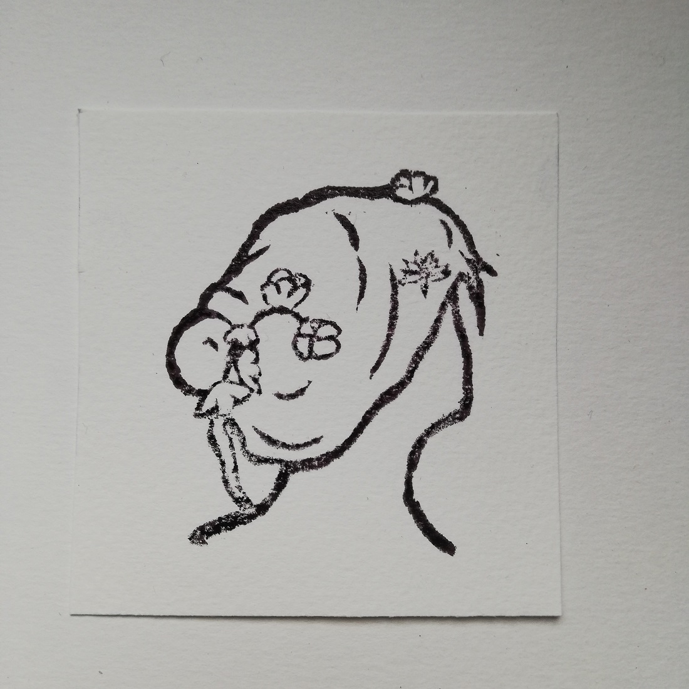

LENA KAHLE
HOME
ABOUT
CV
Hylas and the Water Nymphs

This stamp was inspired by the painting "Hylas and the Water Nymphs" by Henrietta Rae. It depicts the nymph in the bottom center of the painting.